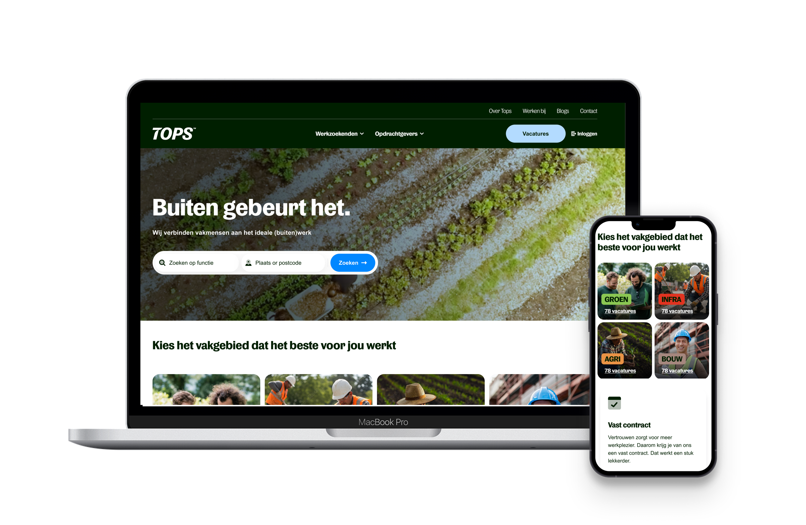
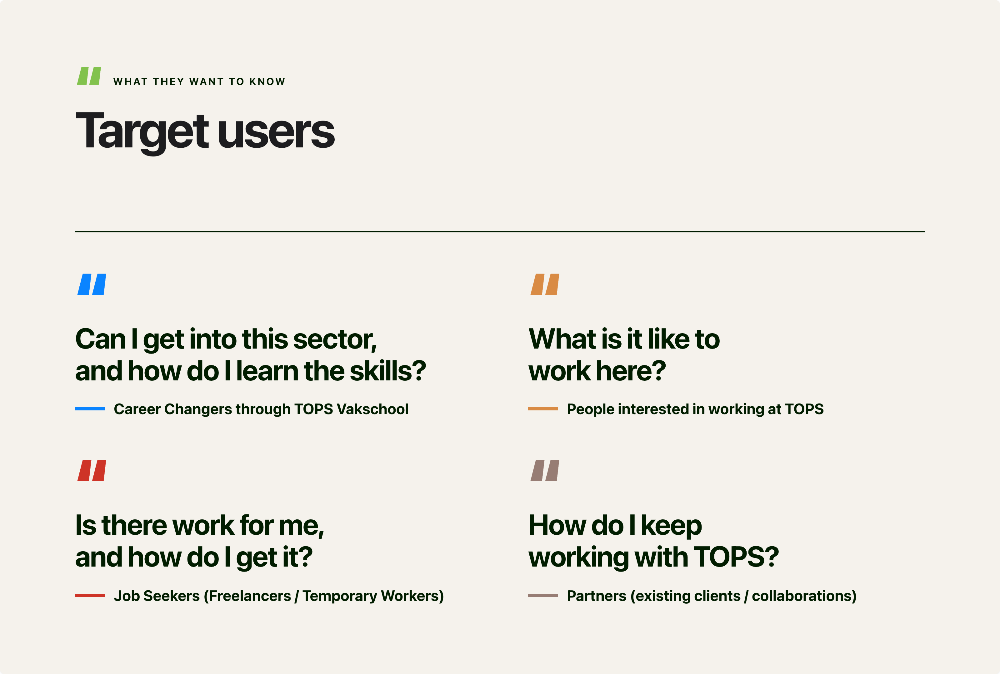
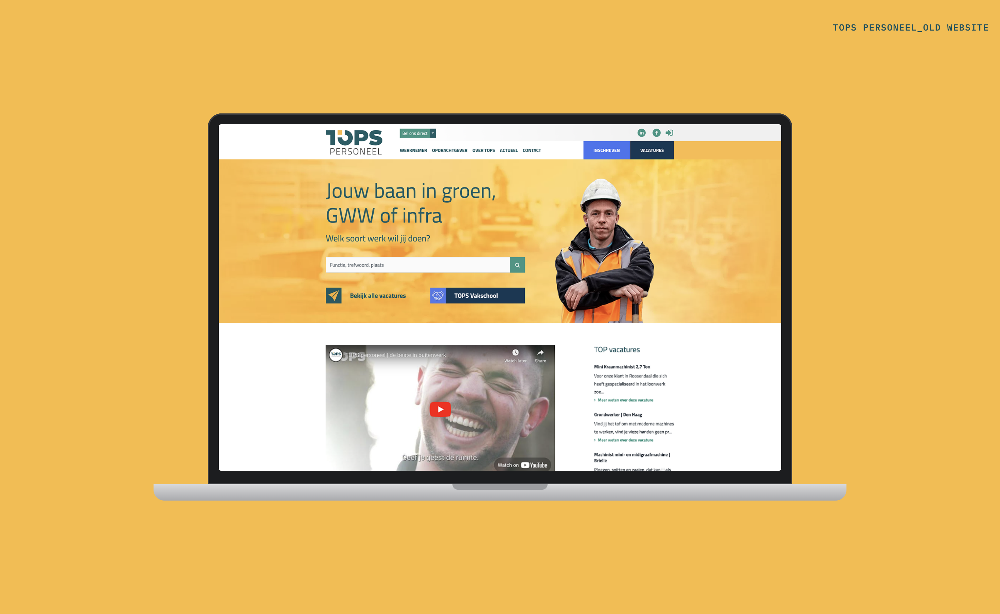
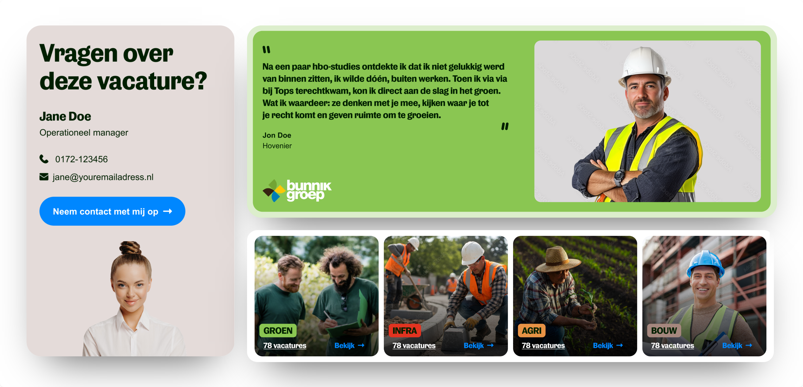
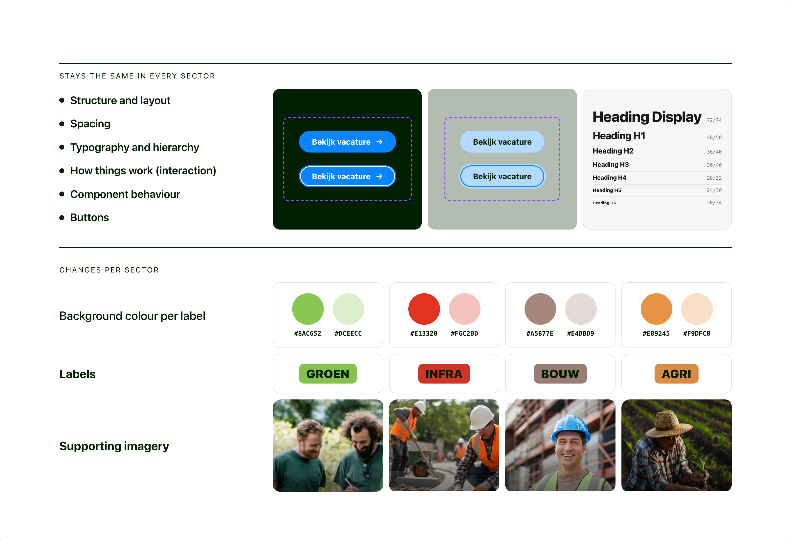

One brand, four sectors, a system that grows
Designing a scalable digital experience for a multi-label recruitment brand
TOPS wasn't just a website redesign. It was the creation of a digital foundation for a growing recruitment business: one brand, four sector identities, and a set of reusable building blocks that lets the website keep growing without being redesigned every time.

01 · Context
One website, many audiences
TOPS is a Dutch specialist recruitment and staffing company connecting people with work across Green, Construction, Infrastructure and Agriculture. The platform serves multiple audiences, from job seekers and temporary workers to employers, career changers and existing partners.
TOPS was going through a brand refresh. The challenge wasn't just to update the website's look. We needed to make it easy for different audiences to find services and careers, while giving the internal team the flexibility to build and create pages on their own.

02 · The design challenge
A simple brief with layers underneath
The challenge went beyond redesigning individual pages. TOPS needed a website that felt like one brand across its four sectors: Groen, Agri, Infra and Bouw, while adapting to different audiences and user journeys.
The existing website had cluttered navigation, competing CTAs and weak visual hierarchy, making it harder for candidates to find and apply for vacancies. Job listings were easy to miss, while limited social proof made it harder to build trust.
At the same time, the website was difficult for the internal team to manage and expand. The new design needed to work within a flexible Storyblok structure that allowed the team to create and update pages without starting from scratch.

The overall website should feel like TOPS. But as users move deeper into a sector, the interface should take on that sector's visual identity.
In reality, there were several layers of complexity underneath.
One website, four visual identities
TOPS has four sector labels: Groen, Agri, Infra and Bouw. Each has its own colour and character. Together they still had to read as one brand.
Too many starting points and competing calls to action
The homepage tried to speak to different audiences and services at the same time. Job seekers, employers, students and other visitors had to figure out which path was relevant to them, with no clear starting point or primary next step.
Different stages of the funnel
Some visitors are just discovering TOPS. Others are one click away from applying. The design had to work for both, from discovery to consideration to conversion.
Built to be managed, not just admired
The website would be built in Storyblok, a content management system. The TOPS team needed to create and change pages themselves, without a designer redrawing every new page.
The challenge wasn't to design a collection of attractive pages. It was this:
How do we create a strong, recognisable brand experience, while giving TOPS the flexibility to keep building new pages and content over time?
03 · My approach
Structure, system, expression
I started with a UX audit of the existing experience, looking at the information architecture, navigation, page hierarchy, and key conversion points. I split the work into three levels, and worked through them in order.
Structure
Understanding what different users needed to accomplish, from finding a vacancy to exploring training or contacting TOPS as an employer.
System
Identifying reusable patterns and turning them into flexible components: heroes, cards, CTAs, forms, vacancy tiles, search and filters, accordions and content blocks.
Expression
Applying the TOPS brand and four sector identities through colour, imagery, accents and visual hierarchy.
04 · From pages to a system
Designing the building blocks, not the pages
Rather than designing each page as a separate layout, I looked for patterns that could be reused across TOPS’s different recruitment journeys. The aim was to create a set of components that could work across the website and be adapted as new pages were added.
The goal was not "Design 14 pages." It was "Design the system that allows TOPS to create many more pages."

The new website was built in Storyblok, where the TOPS team would create pages by combining these blocks. I therefore designed each component with its actual use in mind: how it would handle different content, where it could be used, and how it would behave across screen sizes.
I tested each block with:
- Short and long headings
- Different amounts of text
- Different image sizes and ratios
- One or more buttons
- Desktop, tablet and mobile layouts
- All four sector colours
- Different page types
I also considered how blocks would work together, so that combining them would still result in a clear and consistent page.
The result was a set of reusable blocks that could be used across different pages and sectors. The TOPS team could then build new pages in Storyblok using the same components, without needing a separate design for every page.
05 · One system, four expressions
Groen, Agri, Infra and Bouw from one set of parts
A big part of the work was taking one component and making it work for Groen, Agri, Infra and Bouw.
The tempting option was four separate designs. That would have made the website feel like four unrelated sites, and multiplied the work for designers and developers by four.
Instead: one system, four expressions.

The sector colours weren't decoration. They became part of the navigation: a quiet, constant signal of which part of TOPS you're in.
06 · Designing for the recruitment funnel
More focus the closer people get to applying
The website isn't a static set of information pages. People move through it in stages, and at each stage they're asking a different question.

All three are built from the same blocks. No separate experiences, just different combinations of the same parts.
07 · The vacancy experience
Where a visitor becomes an applicant
The vacancy page is where a visitor becomes an applicant. That makes it one of the most important pages on the site.
Vacancy pages are often treated as long blocks of text. But a job seeker usually needs answers to a handful of questions, fast:
- What is the job?
- Where is it?
- How many hours?
- What will I earn?
- What experience do I need?
- What will I actually do?
- How do I apply?
So I designed the page around those questions. The key facts sit at the top, easy to scan, so people can decide within seconds whether a job is for them. The fuller description follows for those who want to read on.
The apply button stays visible and prominent the whole way down. Whenever someone is ready, the next step is right there.

08 · Outcome
A scalable UX/UI foundation
The result was a scalable UX/UI foundation for the new TOPS website. The project delivered:
- One consistent TOPS experience across desktop and mobile
- Four sector identities, Groen, Agri, Infra and Bouw, built on one shared system
- A library of reusable blocks and patterns, ready to use in Storyblok
- Designs for every key journey: job seekers, career changers, employers and content readers
- Independence for the TOPS team: new pages can be built from existing blocks, without redesigning the experience from scratch
09 · What I learned
Consistency doesn't mean identical
The most important lesson: consistency doesn't mean making everything look identical.
The real work was finding the balance between three forces:
Consistency
Users should recognise the same product everywhere and understand how it works.
Differentiation
Each sector should have its own identity and feel relevant to its audience.
Scalability
The design should work across many pages without adding complexity for designers and developers.
Final reflection
This project pushed me to think beyond individual screens, and to see how everything connects:
- Brand
- Information architecture
- Components
- Sector identities
- User journeys
- Conversion
The most valuable thing I designed wasn't any single page. It was the rules behind the pages: enough structure to keep the experience consistent, and enough freedom for TOPS to grow.
One brand. Four sector identities. Reusable blocks.
A system that can evolve.